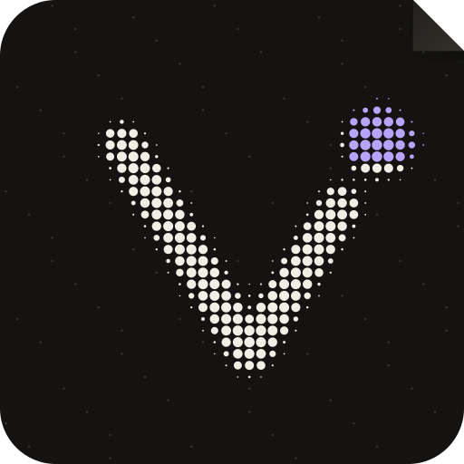

<!-- The source of the README's app tour (docs/images/readme/vyre-tour.gif); its screens are the app's sample world (apps/app, npm run export:web:mock) at 1440 by 900. Each frame is window.render(t) in headless Chromium at 1920 by 1080, 30 frames a second; ffmpeg makes the MP4 and the GIF (12 fps, 860 wide), gifsicle --lossy=70 makes it small. -->
<!doctype html>
<html><head><meta charset="utf-8">
<link href="https://fonts.googleapis.com/css2?family=Instrument+Sans:wght@400;500;600&display=block" rel="stylesheet">
<style>
* { box-sizing:border-box; margin:0; padding:0; }
html,body { width:1920px; height:1080px; overflow:hidden; background:#070706; font-family:'Instrument Sans',-apple-system,sans-serif; color:#F1EEE6; -webkit-font-smoothing:antialiased; }
#bg { position:absolute; inset:0; background:
  radial-gradient(1000px 700px at 20% 15%, rgba(184,164,255,.22), transparent 60%),
  radial-gradient(900px 700px at 85% 90%, rgba(243,162,94,.14), transparent 60%),
  linear-gradient(160deg,#16151a 0%,#0e0d0f 55%,#09090a 100%); }
.shot { position:absolute; left:0; top:0; width:1920px; height:1080px; transform-origin:0 0; will-change:transform,opacity,filter; }
/* a Mac window around each screen: 1440 x 900 of app under a 38 px title bar */
.win { position:absolute; left:240px; top:71px; width:1440px; height:938px; border-radius:16px; overflow:hidden; background:#0E0D0C;
  border:1px solid rgba(241,238,230,.10); box-shadow: inset 0 1px 0 rgba(255,255,255,.06), 0 60px 140px -40px rgba(0,0,0,.85), 0 6px 18px rgba(0,0,0,.4); }
.tb { height:38px; display:flex; align-items:center; gap:8px; padding:0 16px; background:#141311; border-bottom:1px solid rgba(241,238,230,.06); }
.tb i { width:12px; height:12px; border-radius:50%; display:inline-block; }
.tb .t { margin-left:auto; margin-right:auto; font-size:13px; color:#8C877D; transform:translateX(-30px); }
.win img { display:block; width:1440px; height:900px; }
#scrim { position:absolute; left:0; right:0; bottom:0; height:330px; pointer-events:none; background:linear-gradient(180deg, rgba(7,7,6,0) 0%, rgba(7,7,6,.82) 55%, rgba(7,7,6,.94) 100%); }
#cap { position:absolute; left:0; right:0; bottom:58px; text-align:center; font-size:40px; font-weight:500; letter-spacing:-.01em; }
#cap small { display:block; margin-top:10px; font-size:24px; color:#B3AEA4; font-weight:400; }
#vig { position:absolute; inset:0; pointer-events:none; background:radial-gradient(1500px 950px at 50% 45%, transparent 55%, rgba(0,0,0,.55) 100%); }
#end { position:absolute; inset:0; display:flex; flex-direction:column; align-items:center; justify-content:center; gap:28px; background:#0a0908; }
#end .w { font-size:76px; font-weight:600; letter-spacing:-.02em; } #end .s { font-size:30px; color:#B3AEA4; } #end .u { font-size:24px; color:#B8A4FF; }
</style></head><body>
<div id="bg"></div><div id="shots"></div><div id="vig"></div><div id="scrim"></div><div id="cap"></div><div id="end"></div>
<script>
const $ = s => document.querySelector(s);
const DIR = "shots/"; // the app screens, taken from the sample-world export at 1440 by 900 (see the note at the top)
// each scene: its screen, when it is on, where the camera looks (window px from the window's top left, under the title bar) and how close, and its words
const SCENES = [
  { img: "_u_now-1440.png", t0: 0.0, t1: 5.4, cam: [[0, 720, 450, 1.0], [1.2, 720, 450, 1.0], [4.6, 520, 420, 1.6]], cap: "Everything that needs you, in one place", sub: "Across every space you are in" },
  { img: "_chat_demo-1440.png", t0: 5.0, t1: 10.6, cam: [[0, 860, 200, 1.6], [4.8, 860, 520, 1.6]], cap: "People and agents in one conversation", sub: "Your agent runs the tests, reads the failure and fixes it" },
  { img: "_u_vault-1440.png", t0: 10.2, t1: 15.6, cam: [[0, 720, 450, 1.0], [1.0, 720, 450, 1.0], [4.4, 1010, 450, 1.55]], cap: "Keys your agents use, but never see", sub: "Every use is logged. Showing a value needs your Face ID." },
  { img: "_u_projects-1440.png", t0: 15.2, t1: 20.0, cam: [[0, 900, 260, 1.5], [4.4, 900, 440, 1.5]], cap: "One shared picture of the work", sub: "Clients, projects and tasks your team and agents read from one place" },
  { img: "_u_flows-1440.png", t0: 19.6, t1: 24.0, cam: [[0, 720, 450, 1.0], [0.8, 720, 450, 1.0], [3.8, 640, 260, 1.7]], cap: "Automations that run the same way every time", sub: "And anything that leaves waits for your yes" },
];
$("#shots").innerHTML = SCENES.map((s, i) => `<div class="shot" id="s${i}"><div class="win"><div class="tb"><i style="background:#ff5f57"></i><i style="background:#febc2e"></i><i style="background:#28c840"></i><span class="t">Vyre</span></div></div></div>`).join("");
const clamp = v => Math.max(0, Math.min(1, v)), io = t => t < .5 ? 4 * t * t * t : 1 - Math.pow(-2 * t + 2, 3) / 2, out = t => 1 - Math.pow(1 - clamp(t), 3);
function camAt(keys, u) { let i = 0; while (i < keys.length - 2 && u > keys[i + 1][0]) i++; const [a, x0, y0, s0] = keys[i], [b, x1, y1, s1] = keys[Math.min(i + 1, keys.length - 1)], k = b > a ? io(clamp((u - a) / (b - a))) : 1; return { x: x0 + (x1 - x0) * k, y: y0 + (y1 - y0) * k, s: s0 + (s1 - s0) * k }; }
window.render = (t) => {
  let capS = null;
  SCENES.forEach((s, i) => {
    const el = $("#s" + i), on = t >= s.t0 - .01 && t < s.t1 + .01;
    el.style.display = on ? "block" : "none"; if (!on) return;
    const u = t - s.t0, c = camAt(s.cam, u);
    // a point in the window is at (240 + x, 109 + y) on the stage; bring it to the centre at scale s
    const px = 240 + c.x, py = 109 + c.y;
    // in and out: a blur-zoom crossfade of 0.4 s at each cut
    const fin = i === 0 ? 1 : out(u / .45), fout = 1 - out((t - (s.t1 - .4)) / .4);
    const v = Math.min(fin, fout), extra = 1 + (1 - fin) * .06 - (1 - fout) * .04;
    const S = c.s * extra;
    el.style.transform = `translate(${960 - px * S}px, ${540 - py * S}px) scale(${S})`;
    el.style.opacity = v; el.style.filter = `blur(${(1 - v) * 14}px)`;
    if (u > .3 && t < s.t1 - .3) capS = s;
  });
  const capEl = $("#cap");
  if (capS && t < 24) { const a = out((t - capS.t0 - .3) / .5), b = out((capS.t1 - .3 - t) / .4), v = Math.min(a, b); capEl.innerHTML = `${capS.cap}<small>${capS.sub}</small>`; capEl.style.opacity = v; capEl.style.filter = `blur(${(1 - v) * 10}px)`; }
  else capEl.style.opacity = 0;
  const e = out((t - 23.8) / .9), end = $("#end"); end.style.opacity = e; end.style.filter = `blur(${(1 - e) * 16}px)`;
  end.innerHTML = t >= 23.7 ? `<div class="w">Vyre</div><div class="s">Your team and your AI agents, on a server you own.</div><div class="u">Open source · vyre.run</div>` : "";
};
window.render(0);
</script></body></html>
